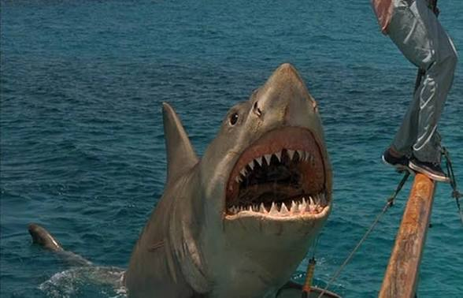

🦈 🏝️ JAWS THE REVENGE (1987) — CERTIFIED MGC G-4

🏛 MGC LOWER COURT OF APPEALS
- ASSET TITLE: Jaws: The Revenge (1987) – The Bahamas Telepathic Great White Ledger
- OFFICIAL REGISTRY GRADE: Certified MGC G-4 (Good / Heavily Circulated Sequel Relic)
- LOWER COURT JURISDICTION: Judge Morpheus
- CASE FILE: #116
📜 THE FORENSIC NARRATIVE BREAKDOWN & RECOVERY
Examined under the strict 5x numismatic magnifying lens, Jaws: The Revenge (1987) exhibits severe structural corrosion across almost every narrative and technical seam, surviving just one tier above PO-1scrap metal on sheer late-night camp watchability.
1. The Telepathic Revenge & Roaring Shark Corrosion (Script & Physics Defect)
- The Defect: The plot abandons basic marine biology in favor of a vengeful great white shark that stalks Ellen Brody (Lorraine Gary) 1,500 miles from Amity Island to the Bahamas—and literally roars like a lion above water.
- The Forensic Data: Giving a shark psychic flashbacks to events it never witnessed and vocal cords during the climactic boat-impaling sequence shatters all dramatic tension and reduces the apex predator of Spielberg’s 1975 original into unintentional rubber-fin comedy.
2. Severe Continuity & Editing Fragmentation (Technical Execution Scuff)
- The Defect: Rushed production schedules leave glaring continuity errors and visible mechanical-shark seams scattered throughout the third act.
- The Forensic Data: From shark-attack victims surviving off-screen after being visibly dragged beneath the waves to Michael Caine’s Hoagie wading ashore after a plane crash in a completely dry shirt, the editing reveals heavy circulation wear under close inspection.
3. The G-4 Floor Survival Luster (Why It Escapes PO-1)
- The Defect & Buffer: While narrative logic is nearly unreadable, the film retains basic 35mm theatrical cinematography, sunny Bahamas location photography, and committed veteran turns from Lorraine Gary and Michael Caine.
- The Forensic Data: That baseline studio production polish and genuine B-movie entertainment value keep the specimen bolted onto the G-4 Good floor rather than being condemned to the PO-1 sub-basement.
⚖ FINAL JUDICIAL VERDICT
- With catastrophic script corrosion balanced only by glossy Bahamas location photography and high camp value, the asset permanently locks into the registry as a Certified MGC G-4 Good. Case Closed. 🦈🏝️🔨

• © 2026 MOVIE GRADING CONSENSUS. All Sovereign Rights Reserved.